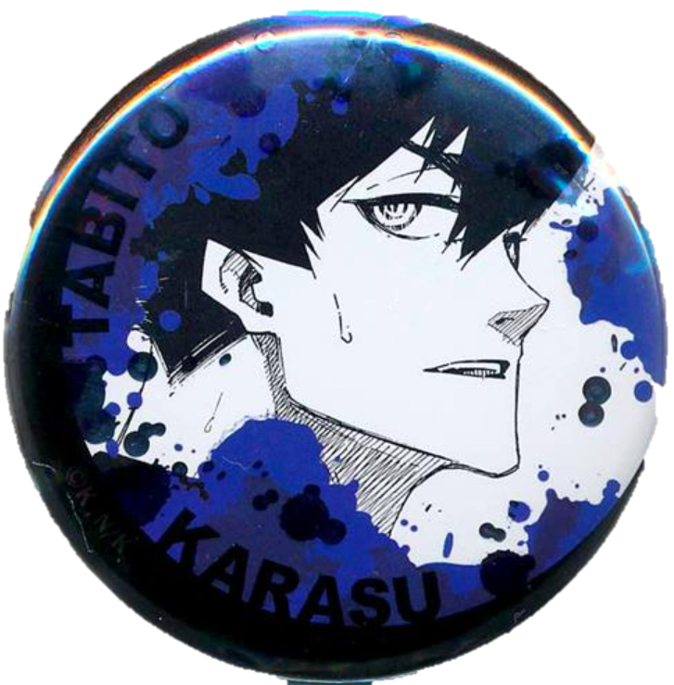
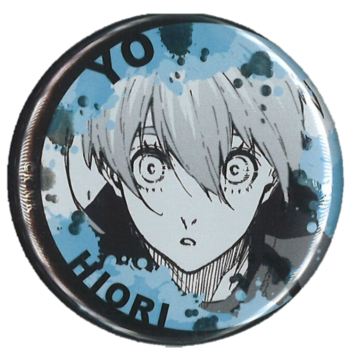

陰沉黑暗的房間裡，隱約傳出敲打鍵盤和點擊滑鼠的聲音，整間房內只有電腦螢幕的亮光，映照出水色的身影。
纖細的食指滑動滑鼠滾輪，然後停下、點開大標題。
「當今繁榮的社會不可不剷除的黑勢力」的標題底下，洋洋灑灑抨擊至今依然存在的「黑道」、「黑手黨」等組織，而大小僅次於大標題的，是名為『不良少年人數不減反增 少年的父母落淚呼籲』，旁邊還有一張灰階照片，婦人握緊手帕拭面，男人抿唇雖然強裝鎮定卻壓抑不住發顫的嘴角。
食指快速滾動著滾輪，然後關上頁面。青年打開桌面上的俄羅斯方塊程式，下意識點下開始鍵，第一個七字型的藍色積木緩緩落下。
「不良少年」，他心不在焉地想著，想到剛才的照片裡不曉得哪個少年或少女的父母，卻不是感到同情。
難道不正是因為父母，才會有人透過加入一些組織來找到歸屬嗎？儘管那些組織對這個社會來說並不是什麼好地方。
「……啊。」他小小聲喊了出來，「Game Over」的字樣在眼前閃爍，這恐怕是他這半年的最低紀錄，這個分數大概從國中以後就沒再看過了。
思量著要不要再開始下一輪，手機鈴聲適時響起，螢幕亮了起來提醒：『本月集會 20分鐘後開始』。看著手機螢幕再次暗下，他也順手將俄羅斯方塊關起來，推開椅子轉身出房。
尚未暗下的電腦螢幕裡，是今日晨報頭條：「港區黑手黨Cappello以高薪工作為誘餌 詐騙社會新鮮人」。

水藍色的青年在推開門後，因為驚愕微微瞪大雙眼。冰織羊雖然不敢說自己每次都最早到，但至少遲到的名單中不會有自己，但是今天Cappello的核心四人裡他竟然成為最晚到的。
關上門後，他語帶歉意：「抱歉，潔，我遲到了嗎？」
被稱為潔的黑藍短髮青年，潔世一不以為意：「你來得正好。不用擔心，蜂樂和凪只是因為剛好被我抓到才不得不準時到的。」
原本還捧著手機的白髮青年，凪誠士郎放下手機，整張臉扒在會議桌上悶悶地說：「好麻煩啊……我明明還在睡的……」
「冰織織如果可以再晚個十分鐘，就能在你臉上畫畫當作懲罰了說～」名為蜂樂的青年像個孩子似的轉著會議椅玩得不亦樂乎。
「好了，既然人都到齊了就先來開會吧。」潔開口：「蜂樂、凪，你們那邊負責的人最近有遇上什麼事嗎？」
「嗯～最近太和平了吧？一點事也沒有。」蜂樂又坐在椅子上飛速轉了一圈，然後用滾輪在地上轉出怪異的節奏。
凪微微抬起頭，提醒：「這種通常都叫做暴風雨前的寧靜。」說完，又趴下去繼續午睡。
「你們兩個！給我認真開會！」發出一陣嘆息後，潔轉頭看向冰織問：「那你那邊呢？」
「確實就像蜂樂和凪剛才說的，最近都沒什麼事。」
潔點點頭，極為小聲低喃：「如果真的是這樣就好了……」
冰織本來想仔細問他剛才說了什麼，但潔隨即換了一個話題：「對了，這個月開始有事情須要拜託冰織。」
「什麼事？」
「啊！是說新人的事對吧～」蜂樂拖著椅子往這裡滑過來，興沖沖道：「冰織也要有後輩了！」
在冰織不知所措前，潔雙手合十滿是歉意：「抱歉！明明你的工作是幕後資訊分析，還要你接下帶新人的工作……」
被這麼一說，冰織都有點不知道該回什麼，最後只是點點頭：「我知道了，那他們哪天開始來呢？」
「……啊，已經來了。」凪晃了晃手機，顯示收到新人的即時訊息。
沒過多久，就有其他底層幹部引領兩個新人進來。第一個進來的是個看起來和冰織年紀相仿、穿著老氣的Oversize西裝、臉色發青的青年。
大概是被騙進來的吧……冰織暗忖，他知道有些幹部為了增加底下的小弟，會假稱自己是高薪工作的主管，錄取不諳世事的上京年輕人，從此進入一條不歸路。
不過這樣的青年為什麼會被潔安排來自己底下呢？
還懷著疑問時，第二名新人也走進來。和第一名青年截然不同，穿著深藍色大衣，臉上沒有任何的緊張或警戒，甚至可以說是充滿餘裕，而且一進來就直勾勾盯著冰織看。
冰織不免有些戒備，不著痕跡用眼角盯著第二名新人。
「那麼先請兩位自我介紹一下……」潔的聲音打斷冰織，在潔的視線示意下，第一名青年向前跨了一步，期期艾艾道：「我、我叫做七星虹生，出生自北海道，大學上京就讀，今年春天剛畢業……那、那個，我上禮拜參加面試前說明會，聽說是簡單好上手又高薪的工作，但剛才看到的那些人看起來……」
聽到七星支支吾吾的話語，原本專注在打手機遊戲的凪抬頭瞄了一眼，繼續把注意力放回手上，嘴巴毫不留情道：「簡單又高薪的工作，在東京不可能有吧？」
「雖然不知道是誰舉辦的面試，不過七星ちゃん一定是被騙了唷。」蜂樂在一旁再補一刀。
臉色變得慘綠一片的青年張口欲辯，最後悻悻然閉上。大概是想問說能不能辭退吧？冰織憐憫地看著七星，依然不發一語。
潔清了清喉嚨拉回大家的注意力，道：「總之，先換第二位自我介紹。」
身穿藍色大衣的新人往前踏出一步，落落大方開口：「我是烏旅人，來自大阪，畢業三年了。目前為止是尼特族，不過因為從大學開始就在關西當私人情報屋，也算是有點零花錢，雖然沒有參加到七星同學說的面試，不過我相信接下來的工作可以活用我身為情報屋的經驗。請各位前輩多多指教。」
「啊，看來是競爭對手～♪」蜂樂嘻皮笑臉說著，不過冰織可是一點也笑不出來。充滿針對性的話語、若有似無地自我抬昇，想到這樣的人即將成為自己要帶領的新人他就感到頭疼。
聽完兩位新人的自我介紹，潔接著說：「謝謝你們自我介紹，那麼接下來由我來介紹。我是潔世一，是Cappello的BOSS；左邊這位坐在高腳椅的是蜂樂、右邊這位在玩手機的是凪，他們倆人是我的左右手；而這邊這位是冰織，是我們的大腦，也是接下來要帶領你們的前輩。」
兩道視線看向冰織──不，是只有七星的視線唰地轉過來，似乎在聽到自己的前輩是長這樣的學長，鬆了一口氣。至於烏，從剛才到現在視線一直徘徊在冰織和周圍，在聽到自己將帶領他時也沒有特別的反應。
「冰織，你也稍微自我介紹吧。」
微微頷首，他看向兩位新人：「我是冰織羊，請多多指教。」
「那接下來，冰織你先帶他們去你的辦公室熟悉環境？」
冰織點頭表示了解潔的意思，打開會議室的門並轉頭要兩位後輩跟上。
「……基本上就是這樣。明天開始才會知道你們要做的任務，在這裡不用勉強和別人打好關係，也不需要把自己的任務內容分享給別人。」微微一頓，冰織補充：「不過在潔くん同意你們獨立前，姑且還是要把你們的任務進度匯報給我。」
介紹完兩位新人接下來的工作環境，七星虹生懦懦舉起手，問：「冰織前輩，請問……」
「不用使用敬語，我不喜歡那種輩份關係。」
冰織才說完，一旁的烏旅人就勾著唇角：「那就恭敬不如從命了，冰織羊。」
果然烏這傢伙很討厭，冰織對烏的印象再一次加深──不好的那種。於是他選擇先無視，看向七星問：「所以你剛才想要問什麼？」
「我……我現在還有機會放棄嗎？」不安的眼神加上一副快哭的樣子，讓冰織在心裡嘆一口氣。身為和潔的「大腦」，他知道潔並不希望這種無辜的人被拉進組織裡，可是還是有一些暗地裡企圖推翻BOSS的人不擇手段，也才會有像七星這樣無辜的人被傻傻得騙進來。不過，如果不是貪圖簡單高薪的工作，大概也會發現這顯然是詐騙。
「你就先當作來實習，我這裡的工作也只會有情報蒐集，不會有什麼不好的事情，先做三個月試試吧？」冰織盡可能和善地說服。其實他不討厭七星，特別是跟烏比起來。
七星勉為其難點點頭，然後問：「我可以問冰織さん為什麼會進來Cappello嗎？」現在青年已經知道自己誤闖黑手黨了，但他不懂的是除了一開始帶他到會議室前的人，目前為止遇到的BOSS、左右手，還有眼前自己的前輩，大家都不像是黑手黨的人，尤其是比自己還要纖細的冰織。
「好像在不知不覺間就順勢加入了。」冰織含糊不清地回答，在任何一個人追問前轉移話題：「我們大部分的工作時間是晚上，不過你們兩位可以先做下午就好，至於住宿已經有安排了嗎？」
只見七星點頭解釋：「我從大學開始住的租屋處至今都還能繼續住。」
轉頭看向烏，對方兩手一攤：「我今天才從關西上京，還沒找到房子，組裡有供宿嗎？」
真是讓人火大，這麼迫在眉睫的大問題還能一臉餘裕，就是吃定這邊會提供住宿才老神在在。冰織不甘不願道：「我會幫你告訴潔くん，他會幫你安排。」
結束新生說明後，冰織到潔的辦公室一趟，回報了烏需要住宿的事情。
「我知道了，我會讓人去準備。」潔把一杯咖啡推到冰織面前，關心問：「兩個新人還好嗎？」
冰織露出苦笑：「在這裡有新人真的很奇怪呢，尤其是讓我來帶他們什麼的……我以為在這裡不會需要我來培訓新人。」
潔再次面露歉意：「抱歉啊，果然讓冰織你困擾了對吧？」
「不會，只是不懂為什麼要招募新人來做情報分析。」
潔解釋：「七星くん的話，果然是因為知道對方是被騙進來的，我有讓蜂樂稍微調查過他的背景，據說到高中為止都是北海道的足球校隊名將，大學時作為體保生來到東京，只是實力被其他人比下去，選擇放棄以足球選手為職業的夢想。但是至今為止除了足球以外沒有特別學過專業技能，求職過程被刷掉很多次了。」
「……原來是這樣啊。」
「所以，算是一種賠償？想說比起讓他接觸那些工作，也許跟著冰織你一起做的話，七星くん應該比較不會排斥吧。不過我不知道他的情報分析能力到什麼程度，這點就需要多麻煩你幫忙了。」潔再次雙手合十，誠懇地拜託。
冰織搖搖頭：「沒事，反正他也不讓人討厭，我大概知道該怎麼做了。」
「對了，因為選了比較沒有經驗的七星くん，又剛好收到烏さん的求職信，所以我就把他一起派給你了。交給你兩個新人應該沒有問題吧？」
對此，冰織無奈道：「對於能不能好好應對烏有點不安……但我會努力的。」
<試閱結束>
Hat Trick
港區黑手黨之一的Cappello組下除了BOSS和兩位副手外，還有一個幕後核心人物－－被BOSS稱為大腦的冰織羊。
即便是這樣的他第一次被指派要帶領新人，掛著餘裕的新人烏旅人說話總是一針見血，明明應該避之唯恐不及，兩人卻越來越靠近……
作者：軒轅封
價格：100元
通路：CWT64台北場 | 7-11賣貨便通販
生日：8月15日
出生地：日本大阪府
現在年紀：29歲
身分：Cappello新人/…？
聲優：古川慎
作為新人加入Cappello卻一點也沒有新人的樣子，聽說以前就已經是關西地區著名的殺人屋，本人自言只是因為受夠了關西所以決定上京。帶著看透一切的笑容和犀利的眼神，善於用話術引導對方掉入自己的圈套，讓人不禁懷疑他是否真的只是新人……

烏旅人

冰織羊
生日：11月30日
出生地：日本京都府
現在年紀：26歲
身分：Cappello大腦
聲優：(我好想知道)
擅長電子益智遊戲的同時，也有著為人讚賞的邏輯思考能力。雖然長得弱不禁風，但只有BOSS潔世一在十年前就善待這樣的冰織，也讓他的長才得以發揮，他也把Cappello視為自己的歸屬。可是自從烏旅人到來，許多問題一一浮現……

Lemon
米津玄師
戻らない 幸しせがあることを
「有些幸福是一去不復返」
最後にあなたが教えてくれた
這是你在最後所告訴我的
言えずに隠してた昏い過去も
沒說出口 被隱藏起來的昏暗過去
あなたがいなきゃ永遠に昏いまま
如果沒有了你 就將永遠昏暗下去